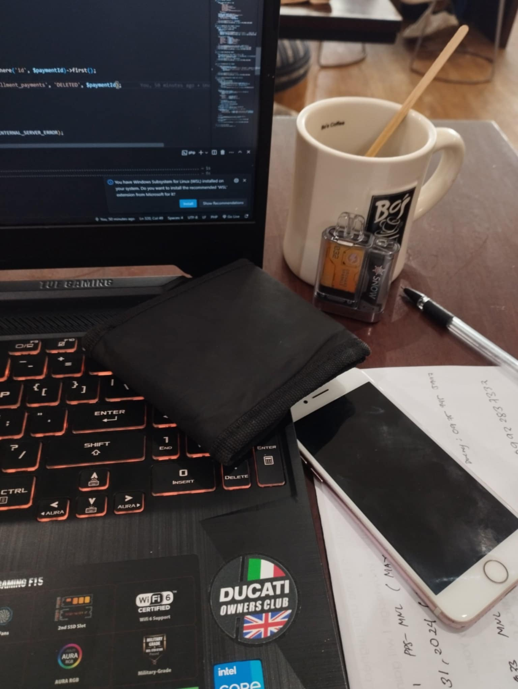
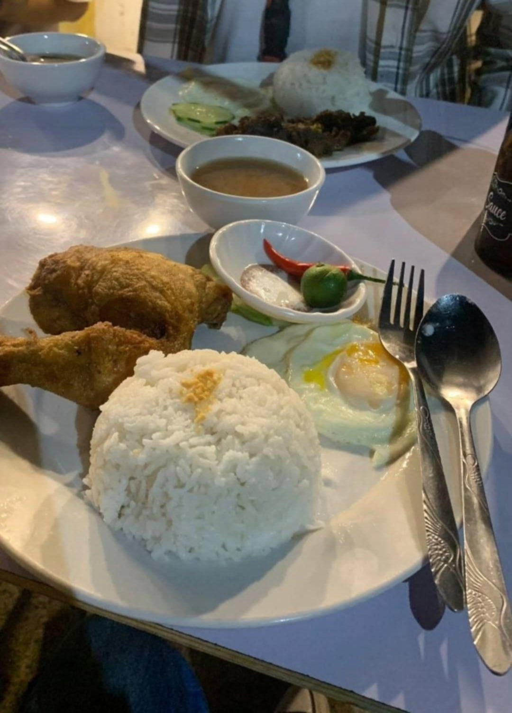

Meet me, I'm Jerrick Elopre, a 23 years old from barangay San Jose, Puerto Princesa City, Palawan. Standing at 6ft tall, i guess you could say I'm hard to miss! But what really defines me isn't my height, its the things i love like animals icare about. I am always passionate about online games whether teaming up with my friends or going solo for a mission. Gaming is my way of unwinding and having fun. beyond that, i can say that i am a person who likes to help people as long as i can do it. Helping a friend gives me a sense of fulfilment and it's one of the things i show my care. At home my life was full of fun, thanks to my pets, our family have 14 cats and 8 dogs, and they bring so much joy to me. I love taking care of them. They are not just an animal or pets to me, for me, they are family. I have 1 brother but we're not close. He's the only relatives that I don't have strong connection with. I also drink occasionally, but to be honest, I don't like the taste of alcohol. For me it less about the drink and more about being part of that amazing moment. Like sharing laughter and stories with friends or just chilling after a tiring day.

Inside Robinson's Place Palawan there's a place where you can chill and relax, called Bo's Coffee, a coffee shop that feels calm and cozy where you can take a break and a enjoy a good cup of coffee. When we order for our coffee there's a lot of options to choose, we order Espresso because we didn't sleep last night that day so we can focus on things were doing for our requirements. After a minutes of waiting the coffee is served by the staff who's also helped us to connect in their wifi. I can say that all the staff is well trained and has a good communication skills, and we appreciate that. Regarding in their products which is the coffee, i can say that it's quite good, it helps me to focus and concentrate. The only thing that i didn't like is that the coffee shop is inside the mall and that means a lot of people will passes by and of course we can't avoid the noise coming from them, add to that, almost of the table is outside in their shop. The only suggestion i have is to wear earphones while working or doing something.
Every year my family celebrates Christmas together and there's a year that i really can't forget, which is 2022. That time i feel the Christmas vibe and our home filled with love and the smells of delicious foods that my Mom and Aunt's prepared as we celebrate with family and friends. Even though our house don't have a lot of decorations but we still manage to have fan. Everyone gathered around, ready to play a Christmas games. i received cash and a lot of gifts from different relatives plus the prize i got from winning the game. After playing we eat together with joy and laughter. The food in the table was mix of family favourite special holiday dishes. What made the night even more special was the bonding together, we share stories and i even invite some friends to make it event more memorable. I can say that, it was night filled with joy, good food and the warmth of being surrounded by people i care about most. This Holiday Season reminded me that it is truly about love, togetherness and creating unforgettable memories.

Kuya Caloy is the perfect spot if you're looking for a great place to eat. It's a Restaurant with a delicious and affordable food and has a friendly atmosphere that makes you stay longer. The moment i step inside to order, i greeted with the freshly cooked dishes and the approachable staff. I ordered Silog that has a perfect fried egg and a lot of variety of meat fried rice. The menu has something for everyone. Their best seller is the Kare-kare, served with a hot rice. While eating i observed that they uses is a fresh local ingredients to make sure that every dish taste amazing and perfect. That time i eat a lot and even eat some of my friends foods. After eating we rest and leave woth a happy tummy. Whether you're a food lover or just want a good meal, Kuya Caloy is a restaurant you'll want to visit again and again.
E. Gabuco Rd.1, Barangay San Jose, Puerto Princesa City, PALAWAN, Philippines
+63 956-720-2665
202090223@psu.palawan.edu.ph